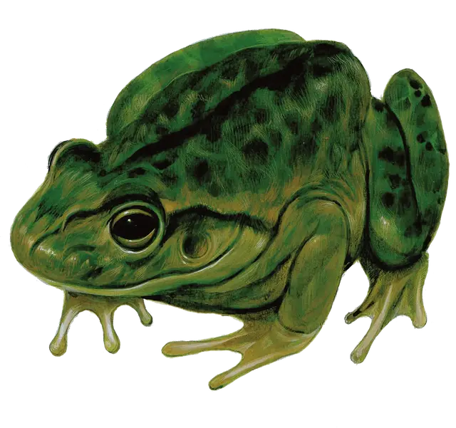

Гигантская лягушка
Giant Frog
Средний Зверь, без мировоззрения

Класс Доспеха 11
Хиты 18 (4к8)
Скорость 30 футов, плавая 30 футов
| мод | спас | ||
|---|---|---|---|
| СИЛ | 12 | +1 | +1 |
| ЛОВ | 13 | +1 | +1 |
| ТЕЛ | 11 | +0 | +0 |
| мод | спас | ||
|---|---|---|---|
| ИНТ | 2 | −4 | −4 |
| МДР | 10 | +0 | +0 |
| ХАР | 3 | −4 | −4 |
Навыки Восприятие +2, Скрытность +3
Чувства тёмное зрение 30 футов, пассивное Восприятие 12
Опасность 1/4 (50 опыта)
Бонус мастерства +2
Среда обитания Болото, Лес
Особенности
Амфибия. Лягушка может дышать и воздухом и под водой.
Прыжок с места. Лягушка совершает прыжки в длину на расстояние до 20 футов и прыжки в высоту на расстояние до 10 футов, хоть с разбегом, хоть без него.
Действия
Укус. Рукопашная атака оружием: +3 к попаданию, досягаемость 5 футов, одна цель. Попадание: 4 (1к6 + 1) колющего урона, и цель становится схваченной (Сл высвобождения 11). Пока цель схвачена, она опутана, а лягушка не может кусать другую цель.
Проглатывание. Лягушка совершает одну атаку укусом по цели с размером не больше Маленького, которую схватила. Если атака попадает, цель становится проглоченной, и захват оканчивается. Проглоченная цель ослеплена и опутана, и обладает полным укрытием от атак и прочих эффектов, исходящих снаружи лягушки, а также получает 5 (2к4) урона кислотой в начале каждого хода лягушки. У лягушки может быть проглоченной только одна цель одновременно.
Если лягушка умирает, проглоченное существо перестает быть опутанным ей, и может высвободиться из трупа, потратив 5 футов перемещения, падая при выходе ничком.